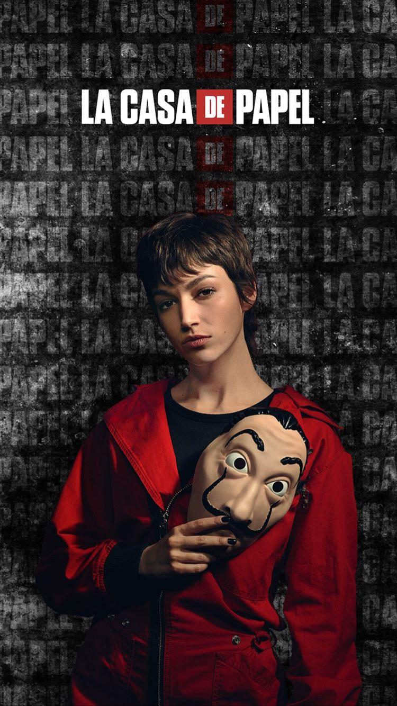

Tokyo
Tokyo (Silene Oliveira) is a fictional character in the Netflix series Money Heist, portrayed by Úrsula Corberó.[1] The de facto protagonist of the series, she is the unreliable narrator[2] and a runaway robber who is scouted by the Professor to participate in his heists
Tokyo is a young thief on the run from the police after a failed robbery in which her boyfriend was killed. Her mother tried to hand her over to the police before she was involved in the heist, but later died of cardiac arrest, potentially from stress. She was hired by the Professor to help in carrying out a heist of the Royal Mint in Madrid. Together with the other seven robbers chosen for the heist, she is taken to a secluded villa where they plan the heist for five months. The Professor asks each of the robbers to choose a city name to hide their identities during the robbery and she chooses Tokyo. Tokyo is a flirty and rebellious character, and she has a relationship with Rio, that stops and starts throughout the first heist. She shares a good friendship with Nairobi, the two having gotten drunk together many times. She doesn’t like being told what to do and shows dislike for Berlin in the first series.